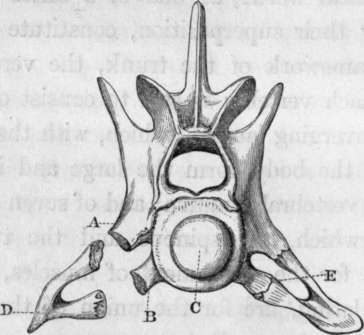
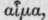
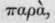
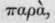

What Is A Vertebra ?
Description
This section is from the book "The Homologies Of The Human Skeleton", by Holmes Coote. Also available from Amazon: The Homologies of the Human Skeleton.
What Is A Vertebra ?
It is commonly described, in anatomical works, as one of a series of bones, which, by their superposition, constitute the solid central framework of the trunk, the vertebral column. Each vertebra is said to consist of a body, of two converging laminae, which, with the posterior surface of the body, form the large and' irregularly triangular vertebral foramen; and of seven processes, three of which, the spinous and the two transverse, are for the attachment of muscles, and four, the articulating, are for the union of the vertebrae one with another. But a cursory glance at the vertebral column will convince us of the insufficiency of this description. The cervical vertebrae, apparently unlike the rest, present, on either side, a foramen for the vertebral artery and vein, in the base of the so-called transverse process. The transverse process in these vertebras is evidently formed by two roots, of which one, posterior, arises from between the articulating processes; and the other, anterior, from the body of the vertebrae. The latter, generally unnoticed, must either be a part which disappears altogether from the composition of the vertebrae of other regions; or else it must be a rudimentary rib. If it be a distinct element of a vertebra, it is surely as deserving of a name as any other process or eminence. If it be a rib, then the dorsal ribs must likewise be admitted to form parts of their corresponding vertebrae. Its true nature may be at once seen by examining the cervical vertebra of the crocodile, one of a class of animals whose bones remain distinct throughout the greater period of their existence. The "transverse process" of a cervical vertebra in the crocodile consists of two processes; one (a), the diapophysis, which arises from between the articulating processes; a second, (b), the parapophysis, which arises from the body (c); and the two support a rib (d) , elongated longitudinally to give strength to the extremely movable neck. Between the diapophysis, the parapophysis, and the rib, (the pleurapophysis) there is a foramen (e) for the vertebral artery and vein.
We find in the human cervical vertebra the diapophysis, the parapophysis, and the rib, firmly coalesced one with another, and with the rest of the bone, and concave superiorly to receive the cervical nerves as they emerge from the intervertebral foramina. But if the cervical ribs form part of a vertebra, so also must the thoracic ribs, though united by a complete joint, and in most instances somewhat displaced, so as to be connected with the bodies or centra of two contiguous vertebras, and with the intervening fibro-cartilage. Arching forwards, and uniting with the costal cartilages and with the sternum, they form upon the ventral surface of the body a canal similar to that formed upon the dorsal surface by the laminae and the spinous processes. As in the latter is contained the spinal cord or the myelon, so in the former is lodged the heart, with the large pulmonary and systemic vessels, and the lungs, offshoots of the vascular system.
The body, then, of a vertebra may be described as a centre, around which are four arches, each including a foramen. The posterior, or dorsal foramen, commonly called "vertebral," exists in all human vertebrae, except the coccygeal, and is expanded at the anterior extremity of the trunk into a cranium, which surrounds and protects the assemblage of ganglia constituting the encephalon. The circle of bones which surrounds this foramen is called the neural# arch. The inferior arch is found only in particular regions of the human skeleton; namely, the cranium, the thorax, and the pelvis: the ring of bone by which it is formed is incomplete in the neck, the abdomen, and lower part of the sacrum ; but in animals supplied with long tails, e.g. the kangaroo, the ferret, the beaver, or some of the monkey tribe, the coccygeal vertebrae are furnished with an inferior arch of bone, for the protection of the long caudal artery. This inferior ring of bone, whether at the chest, the coccyx, or elsewhere, is termed the "haemal arch."*
* Neural arch, derived from vevpov, nerve—so called, because it contains the cerebro-spinal axis.
The lateral foramina for the vertebral arteries exist only in the cervical region, where the human vertebrae are supplied with two transverse processes on either side, the diapophysis and the parapo-physis.f The absence of the parapophysis in other regions not only does away with the lateral canals, but gives to the bodies of the vertebrae, or the centra, a prominent convex appearance very different from the flat surface presented anteriorly by the cervical vertebrae.
With the following diagram illustrating a typical vertebra, is given Professor Owen's definition of such a bone, and the names which he has applied to its component parts. "I define a vertebra as one of those segments of the endo-skeleton which constitute the axis of the body and the protecting canals of the nervous and vascular trunks: such a segment may also support diverging appendages. Exclusive of these, in its typical completeness, it consists of the following elements and parts.
* arch, derived fromblood,  because it surrounds the great blood-vessels.
+ Diapophysis, parapophysis—outstanding processes. The prepositions  through, and from, as applied to these processes, have no meaning but that of indicating attachment to some centrum or base. Any term expressive of a "transverse direction would be inapplicable, as both dia and parapophyses often become vertical.
through, and from, as applied to these processes, have no meaning but that of indicating attachment to some centrum or base. Any term expressive of a "transverse direction would be inapplicable, as both dia and parapophyses often become vertical.
After Owen.
" The names printed in roman type signify those parts, which, being usually developed from distinct and independent centres, I have termed ' autogenous' elements. The italics denote the parts more properly called processes, which shoot out as continuations from some of the preceding elements, and are termed ' exogenous,' e. g. the diapophyses, or upper transverse processes, and the ( zygapophyses' or ' articular processes' of Human Anatomy."*
* On the Homologies of the vertebrate skeleton, p. 81.
Continue to:
- prev: Definition Of The Terms "Archetype," "Homologue," "Analogue"
- Table of Contents
- next: Vertebral Appendage